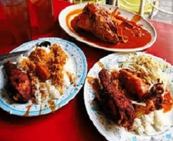
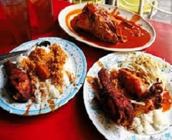

Fish Head Curry
This is the best Fish Head Curry served in Anuar's Fish Head Curry, Kuala Lumpur. The dish is known for almost four decades,
it attracts a lot of local customers. There are limited choices here, apart from the fish head and chicken, you can have fried fish
and squid as well as some stir-fried bean sprouts. While there are some variations to the way fish head curry is cooked, it is sometime
cooked with coconut milk for a creamier texture, the gravy is slightly sour from the tamarind paste.
This spicy dish of curry is cooked with vegetables. The fish is well cooked and served hot, not like kept on table and be ready to be taken by customers. The dish uses spices and ingredients necessary for making a good curry base. The South Indian cooking style is obvious when savouring Anuar’s fish head curry. They also serve delicious fried chicken, which we highly recommend you to try it. We found that, it was quite enjoyable with rice. There is also a enough amount of okra to complement the dish.
You can either order the type of fish you want, or the staff will pick any one depending on its size and the number of people dining.
The fish served here include mackerel and red snapper. The way they fry the chicken is like any of the Mamak restaurants. Even thought
the pieces were small, they were perfectly seasoned and fried well. It was a satisfying meal when included with the bean sprouts, fish curry and warm rice.